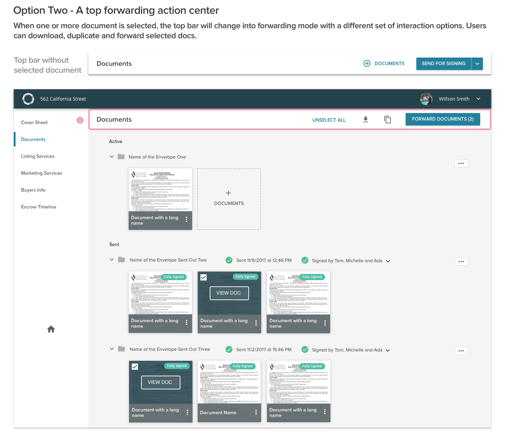

A Feature of the Reside Platform Handling Transaction Documents
Real estate transaction is a complex and time-consuming process in the United States involving many different parties including sellers, listing agents, buyers, and selling agents. In this process, the most vital and core part is handling all the transaction related legal documents. Reside is an online platform supporting real estate agents by streamlining the transaction process. During my stay at Reside, I had the chance to design the new version of one of the core features, the Documents Center 2.0.
While working on this feature, my job included use research, product design, and user testing. Also, this feature had been shipped and well-received by users.
User Research, Product Design, Usability Test
Sketch4, Photoshop, Illustrator, Invision, Abstract
Mar 2018 - Oct 2018
In the United States, the real estate transaction is a very cumbersome process consisting of different steps and stages. In almost every step, drafting and signing different kinds of documents among different parties will happen. In the past, agents will need to manually draft all required documents, send them for signing via email and manage all documents by themselves. Normally, the workflow could be generalized as below
Document handling and processing are indispensable legal requirements by the government. The missing or mistakes in any of those documents could invalidate the whole transaction and cause legal liabilities, which make the document processing very important.
The generalized processing flow might look simple in the diagram above, but the fact is that the documents processing could happen through the whole life cycle of a transaction, which makes it a highly frequent behavior. Relying on manual document drafting and email communication, the actual process could become very hard to manage due to
Without an automated and systematic way to handle all the documents processing steps, dealing with documents ends up being time-consuming, effort-consuming and unmanageable.
In the past, agents will need to manually draft all required documents, send them for signing to different parties via email and manage all documents by themselves, which are chaotic and inefficient. Thus, the Document Center is designed to streamline all those steps and consolidate them in the app. Due to limited time and resources, the first version of document center, Document Center 1.0, came with two main functions: automatic document generation and in-app signature request.
Automatic document generation allows agents to generate documents from the Reside's document library instead of gathering and drafting all documents by themselves. Also, all generated documents will be auto-injected with all transaction info entered by agents before.
In-app signature request enables agents to send those generated documents to different parties for signing without leaving the app.
The current document center can only support a very simple document interaction flow as follow
Step 1 - Choose document template and generate documents
Firstly, agents will need to choose a document template from the document library based on the property they are selling/buying for their clients.
Step 2 - Fill in documents
After selecting templates, they can generate all the documents they need. Documents generated will be auto-injected with information of the transaction. But there will still be some documents requiring agents to fill in some other info.
Step 3 - Send for esign
Once all documents are filled in with required information, agents can send them for signing. The recipients include clients and agents themselves, who will need to sign those documents using Docusign.

The ultimate goal for the document center is to consolidate and streamline all the document processing steps so that it could be more efficient.
However, the document center 1.0 is merely a minimal viable feature covering a small part of agents' document handling process and agents are still doing many document work manually outside the center. Given that, we wanted to identify more detailed needs of agents and missing functions in the current document center. Based on that, we will design the next version, document center 2.0, to further boost and optimize the document handling process.
After being assigned with this feature, my first step was working with the product manager to create a comprehensive project plan from UX research to engineering review. The plan includes important execution flow and general requirement of the feature:
This plan had been updated through the whole project life cycle to accommodate possible changes. The plan plays an important role in the company's product design process because:
Considering the high value of the feature, we decided to spend a decent amount of time taking a more formal design approach from UX research, design, usability test and engineering review.
Given the nature of the product, to understand how agents use the document center, we will first need to know the business logic of their documents processing. At Reside, there is a business team working closely with agent in daily work and they know agents' process quite well. Also, they work in the same office as our product team do, which makes them the perfect and accessible source of backstories. Both reasons combined, we decided to conduct internal stakeholder interviews with the business team as our first step of UX research. Through the stakeholder interviews, we were able to
To conduct contextual inquiries, we reached out to a selected group of agents and went to their workplace for close observations. During the contextual inquiry, agents were asked to go through the normal documents handling process they usually follow. There are several things we focused on:
Other than taking notes, with agents' permissions, we also recorded inquiry videos for other members on the product team who were not able to attend inquiries, so that everyone could observe and generate insights from their own perspective.
To distill our notes into actionable insights, after each contextual inquiry, interviewers and observers of the contextual inquiry “download” their notes by taking 10 minutes to extract the most important points from the session and record them onto color-coded Post-Its: yellow for facts about the workflow, red for problems, purple for ideas. Once all the notes are converted to Post-Its, they’re read out loud and attached to a poster board full of notes for each “master.”
Our next step is to place all the poster boards side by side and start grouping relevant notes to help us identify common themes. We then organize the smaller groups into larger groups, making sure the bigger groups tell a coherent story across many users. Those larger groups of notes are what ultimately lead us to our final insights.
From our data synthesis, some important common needs of agents which the current document center failed to meet surfaced. By categorizing the detailed needs, we were able to find the unmet needs in three aspects.
Signature Management
Only by receiving signatures from all parties can agents move to the next step of transaction. However, it's pretty common that other parties could delay documents signing for various reasons, even agents themselves could forget about giving their own signatures. Thus, monitoring and facilitating the signature request process become very important.
Document Status Tracking
Transactions documents could go through different statuses in the transaction life cycle. It's vital to have a way for agents to easily and clearly know status of all documents and take actions accordingly. Otherwise, the whole transaction could be delayed due to latent actions. Also, it could cause stress to agents as a result of losing track of an overview of document status.
Document Management
Other than sending for signing, agents could perform other managing actions on documents like archiving, downloading and forwarding. It was revealed that the current document center fails to support those actions efficiently due to the lack of document organization features and advanced interaction options.
1. Document Filling Assistance
To minimize the chance of missing required fields in documents, we added the fields missing indicator on both document thumbnails and in the document viewer to smoothen the filling process so there is less time of agents spent on error handling.
2. Document Status
Based on the data collected from contextual inquiries and the analysis results, we created the appropriate statuses for documents and labeled them in document center, so it's easier for agents to know required actions to different documents.

Receiving signatures in time from all parties is the key to create legal bondings in the transaction process. Thus, a feature to monitor and facilitate signature request becomes greatly valuable.
The envelope sent for signing by agents will also require agents themselves to sign. Forgetting to sign documents is a problem of agents too. After sending the envelope for signing, it will be ready for signing after Docusign finishes all the processing in seconds. As soon as it's ready, we will show a prompt to agents to sign the envelope.
If agents have unsigned envelope, there will be an actionable banner and envelope level indicators to remind them to sign documents. The actionable banner provides a quick entrance to sign documents.

To make sure all parties sign documents in time, we introduce a signature request center for every sent envelope, from which agents can track signature request progress and remind outstanding recipients to sign.
Agents can choose to remind an individual outstanding recipient to sign documents by sending an email to them.

They also can choose to resend original Docusign email to all outstanding recipients.
1. Document Hierarchy
From previous user research, we learned that the way agents manage their documents is usually by every sending for signing. Documents sent for signing in the same batch usually belong to the same group. Thus, we introduce "section" and "envelope" in the document hierarchy. Unlike the flat doc structure, documents sent will be moved from the active section to the sent section. Also, each sending will be an envelope containing all documents sent in that batch.
2. Flexible Document Management
To add more flexibility to document management, we added more advanced document interaction options in Document Center 2.0. When the thumbnail of a sent document is being hovered, agents can choose to either view the doc or select it.
After selecting documents, interactions in the top action center will be changed to archiving, downloading and forwarding. Only documents in the sent section could be selected. Selecting documents cross envelope is also enabled to accommodate corresponding use cases which were revealed by user research.
Agents can then add recipients email address, email subject and body text. By clicking on send, all selected documents and message will be sent via email to the recipients.
In the design process, we made a lot design decisions based on product strategy, user feedback and implementation feasibility. Here is an example of design decisions we made. To find the right placement and design for the document forwarding center, we came up with several options. After rounds of discussions, two final options were left.

Option one separates the forwarding actions from general document actions with the pros of always showing general action options, so that the most important actions are always visible to users. Option two utilizes the same area where general document actions live. Action options will change when entering forwarding mode, which centralize different interactions to make the interface cleaner and more consolidated.
Finally, we decide on option two based on usability test result, in which test users find option two to be more expressive and less confusing.
By collecting user feedback through direct customer contact, customer survey and data analysis, a great impact creaed by the Document Center 2.0 was observed after realeasing the new feature
Prioritization is the key to problem solving
There are many different user needs to meet while the team only has limited time and resources to design and develop. What do you do? Prioritize their needs first. This is especially true at Reside as a small company with a small team. In my opinion prioritization is probably the most important thing to complex problem solving. It helps break down complexity into digestible pieces and also makes sure important parts of the problem are solved first.
Have a plan before attacking
Before diving into a complex assignment, spending time to do a planning should be the first step. By including steps and timeline to the plan, you are able to always evaluate your situation and make changes to your approach if necessary. Also, in a team setting, this plan helps the whole team to know your process and progress. So that collaboration will become more smooth.
Leverage all resources you have
It's ok that you don't know everything. You should leverage all resources around you to achieve the goal. At Reside, everything is about the real estate business. But I am not an expert in that. So I need to reach out to different team (the business team, the accounting team and so on) to seek for help. In doing so, it doesn't only help you finish your task but also brings you and your co-workers closer.
Follow the progressive design principle
For a new feature, the first version is usually a trial to collect user feedback and to validate its value. It's unrealistic and unwise to spend too much resources in building a super comprehensive first version. What we usually do is designing only the most prioritized functions while design in a way enabling easy integration with future improvements.
Maximize reuse of existing design paradigm
By maximizing the reuse of existing UI components and design paradigm, we can maintain design consistency across the platform and reduce implementation cost.

Document Center 2.0
Web & Mobile Design

Work Collection at Reside
Web & Mobile Design

Wanderful
Mobile AR Social Application

Samsung Health Motivation
Center
Cross Platform Fitness Application

VR Animals
VR Education Application

Magic Ideation
Mixed Reality Application
Access
Mobile Application

Jaunt VR
2016 Summer Internship